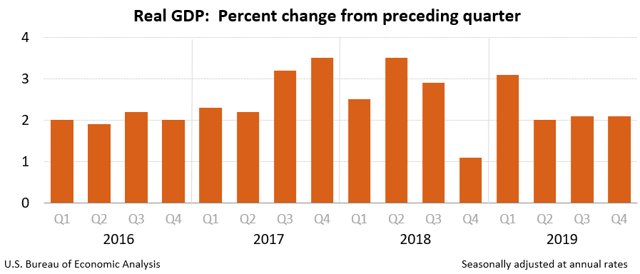

Right before the disaster
2019 GDP
Real GDP increased 2.3 percent in 2019 (from the 2018 annual level to the 2019 annual level), compared with an increase of 2.9 percent in 2018.
The increase in real GDP in 2019 reflected positive contributions from PCE, nonresidential fixed investment, federal government spending, state and local government spending, and private inventory investment that were partly offset by negative contributions from residential fixed investment. Imports increased.
The deceleration in real GDP in 2019, compared to 2018, primarily reflected decelerations in nonresidential fixed investment and PCE and a downturn in exports, which were partly offset by accelerations in both state and local and federal government spending. Imports increased less in 2019 than in 2018.
Current-dollar GDP increased 4.1 percent, or $848.8 billion, in 2019 to a level of $21.43 trillion, compared with an increase of 5.4 percent, or $1,060.8 billion, in 2018.
The price index for gross domestic purchases increased 1.6 percent in 2019, compared with an increase of 2.4 percent in 2018. The PCE price index increased 1.4 percent, compared with an increase of 2.1 percent. Excluding food and energy prices, the PCE price index increased 1.6 percent, compared with an increase of 1.9 percent.
Measured from the fourth quarter of 2018 to the fourth quarter of 2019, real GDP increased 2.3 percent during the period. That compared with an increase of 2.5 percent during 2018. The price index for gross domestic purchases, as measured from the fourth quarter of 2018 to the fourth quarter of 2019, increased 1.5 percent during 2019. That compared with an increase of 2.2 percent during 2018. The PCE price index increased 1.5 percent, compared with an increase of 1.9 percent. Excluding food and energy, the PCE price index increased 1.6 percent, compared with an increase of 1.9 percent.
Source: Bureau of Economic Analysis